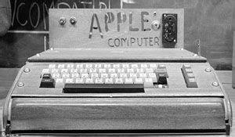
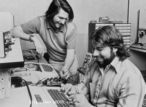

早年. 1975年之前.
电子和电脑产业萌芽的时代，乔布斯的父亲(领养人)最初是一名从事改装并销售二手汽车的商人，并在乔布斯生活中经常给予他接触机械设备的机会，其后他认为自己受到家庭的影响而喜爱精密的设备。乔布斯在早年曾经 是一名智商高但不擅长学习的学生，后被其老师发掘才能而得到身边人的认同。他在曲折的学校生涯逐渐接触到电子设备如无线电设备的安装制作。 在高中时期，乔布斯通过朋友比尔·费尔南德斯（Bill Fernandez）认识了后来的Apple I的创作者斯蒂芬·沃兹尼亚克。二人在这段时期一起听音乐和制作电子仪器，其中最著名的是被称作蓝盒子的盗打电话装置。二人销售此设备从而赚到了一笔钱。 1974年，结束了18个月的校园生涯后，乔布斯到雅达利公司工作，任技术员一职。工作不久后，他以去印度灵修为由辞职，然后经欧洲到达印度，经历了7个月的艰苦旅行。1975年，再次回到雅达利的乔布斯找到沃兹尼亚克开发“打砖块”等的游戏。

 
创业 直到离开苹果
随着技术的发展，电脑由政府操纵社会的象征变成了反主流文化的工具之一。1975年的阿尔泰电脑及围绕此电脑成立的“自组计算机俱乐部”，大推动了个人电脑的发展。参与其中的斯蒂夫·沃兹尼亚克在活动中受到感染，决定开发自己的电脑。乔布斯说服了他，让斯蒂夫·沃兹尼亚克发明的电脑成为了商品。76年，21岁的乔布斯在自家的车房里与26岁的斯蒂夫·沃兹尼亚克成立了苹果电脑公司。他们制造了世界最早商业化的个人电脑，并称为Apple I。
再返苹果 发布iPhone
乔布斯离开苹果电脑公司后，公司的开发主管一职落入让-路易·加西手上，他之前是苹果公司的法国分公司主管。加西将苹果的产品线推向两个方向，即更“开放”和更高价，他认为不应该销售低端低利润的苹果产品。加西的政策致使苹果产品的售价越来越高，公司曾有一个叫“Drama”的低端项目，最终也被加西叫停。1990年，随着苹果的销售下滑，加西的政策开始引起广泛争议并最终将其拉下马，迈克尔·斯平德勒继任。之后，约翰·史考力于1993年辞去CEO职位，斯平德勒接任。他在任期间大力推广低端电脑如Macintosh Classic、Macintosh IIsi、Macintosh LC。以及执行继续生产Apple Newton及开发Copland操作系统的政策，他亦曾参与苹果与IBM、SUN、飞利浦的并购谈判。1996年，吉尔·艾米里欧接任其职位。
健康问题及辞世
乔布斯在1997年以后开始出现问题。他患上了肾结石等疾病，这间接让他发现了自己的癌症。2003年10月，在一次例行的肾脏和输尿管检查中，医生无意中在结果上发现了他的胰脏肿瘤。经检查，医院认为他得的是胰岛细胞或胰腺神经内分泌肿瘤，并建议他进行手术。乔布斯接受了9个月的替代疗法，希望阻止癌症发展，但没有得到预想的效果，才在2004年9月开始接受手术。2011年10月4日，首席执行官提姆·库克第一次产品发表会，推出iPhone 4S。在2011年10月5日下午3时左右，乔布斯于美国加州的寓所逝世。他的死亡证副本显示呼吸骤停是他的直接致死原因，而转移性胰腺神经内分泌肿瘤则是死亡的根本原因。享年56岁。乔布斯的家人发布声明，说乔布斯“在家人的陪伴下平静地离去”。随后，苹果公司也发布了相关声明。
Copyright © 2016 by Star